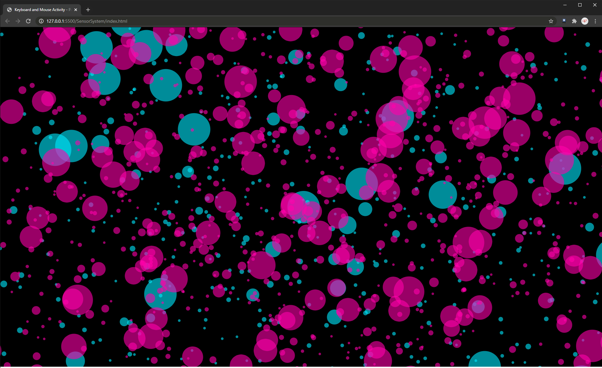
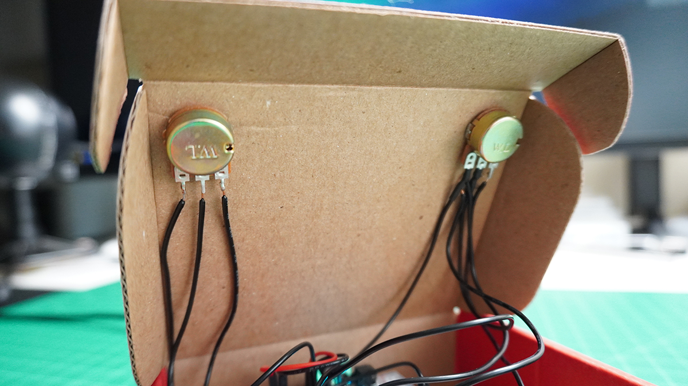

My collection of posts for Fall 2020 at ArtCenter College of Design in Pasadena, California

Anthony Palileo
Advanced Interactive Prototyping
For the third project, we are publishing our Particle board results to an API. We are able to monitor it through ThingSpeak IoT with the ultimate goal of using p5.js to read the data and "do something visual" with it.
I chose to measure the interactions I have with my keyboard and mouse. I began by measuring the outputs created by attaching a piezo to my keyboard and a force resistor to my mouse's left banner. The issue I was facing was that the force resistor peaked way too easily. To adjust for this, I simply replaced that with another piezo, attached on the top of my mouse to capture vibrations from clicking.

Getting a proper readout from each piezo was another challenge. As I console.logged the incoming data, I was seeing that the 1000ms publishing rate was spotty at best, meaning I would have to be clicking my mouse or typing on my keyboard at the exact moment the data was published. I banged my head for a while staring at the wrong end of the data, and trying to write the sketch to work it out. I ended up playing with the console IDE for the Particle board to do some math before publishing. Rather than using delay(), I leaned on millis() to do some work for me in the loop(). I would total up all of the readings over one second (1000ms), average them, and send that data as my reference. Meaning any second where there was some sort of activity in either sensor should increase the average above a certain threshold. Eureka! I was getting somewhere.


I admittedly decided against a traditional time-based "this is keyboard/this is mouse" display. Instead, I wanted to "paint a picture" of my use over a given time. The first iterations of my sketch would populate the screen with random semi transparent dots, magenta for the mouse and cyan for the keyboard. To give them a bit more "life", I programmed them to wiggle around.

Going into my third iteration, I decided I wanted something a bit more dynamic than just circles on a canvas (which kind of just look like bubbles). I set out to create a randomized "brush" to represent these readings. This iteration introduced "particles" which would roam the canvas with zero opacity until a data point above a set threshold would assign them to show at 10%. In response to class feedback, I gave each data set a different shape in addition to the color. Keyboard activity is represented by cyan rectangles and mouse activity, magenta ellipses.
I limited the canvas to 1080x1080 rather than setting to window height and width. This would give me more consistent final pieces to represent together since I don't always have the browser window set to a fixed dimension when accessing the index.
A lot of time was spent mapping and remapping the scales of the particles. Too little and the overall compositions were a bit uneventful. Too large and they consumed the canvas almost immediately. The more intense the vibrations, the higher the readout, the larger the particle. Simple enough! Once I figured out my scaling, I set out to measure the interactions over long periods of time.


As shown, the compositions were unique and very telling. Like the previous bubbles sketches, there is a noticeable difference between the amount of keyboard and mouse activity on any given day, with some days more focused on the keyboard (like typing out this documentation) or days where there was far more mouse clicking (such as working on Motion Design 1 homework on After Effects). This was an entertaining study in how we can produce beautiful artwork by simply going about our business through the day.
The second project introduces a Particle Argon board taking inputs from potentiometers and a tactile button and sending strings of data to be used in the Natural System. To keep things easier to manage, I opted to forgo the whole tadpole eats lettuce and focused on the frog eating the flies.
One major addition to this is the rewriting of code to incorporate forces that repel the flies from the frog. Initially I began by writing in PVectors in place of variables like posX and posY. A few iterations in I found it best to just start from scratch and write the code around these parameters and then bring the frog and fly images in.
The controller is built into a Sparkfun box with the tactile button placed just above the right potentiometer knob. The left knob controls the X axis movement and the right knob controls Y axis movement, much like an Etch-a-Sketch. However, these controls are mapped to full negative or full positive velocity, so unlike an Etch-a-Sketch "cursor", the frog continues in the directions according to the knob positions. The tactile button serves to eat the flies, but only if they are within the set "striking range"
The controller:



For your viewing consideration, a quick demo video:
For future consideration, I would probably add a left tactile button, just for left handed or even ambidextrous engagement.
"Everyone has a different expectation of what a prototype is. Industrial designers call a molded foam model a prototype. Interaction designers refer to a simulation of on-screen appearance and behavior as a prototype. Programmers call a test program a prototype. A user studies expert may call a storyboard, which shows a scenario of something being used, a prototype."
This is a very accurate statement, and is even relevant to this class. I came in under a preconceived notion that the type of interactive prototyping I would be designing would be just like that of previous "interactive prototyping" courses I had taken. I was creating simulations of web pages and mobile apps prior, and each of those courses had different levels of prototypes within them. Some were paper, others were "low-fidelity," while others were basically unpublished working products. Now I am on the cusp of creating a protytype that exists off a page or screen.
The term "prototype" has been thrown around so much it requires context to understand the content. Using Hollywood as an example, Tony Stark of Marvel's Iron Man movies meets with his military colleague James Rhodes to show him a "prototype" of his latest exosuit, but he flies in with it, fully functional and ready to equip with the latest military-grade installations. The authors of the book define prototype as "any representation of a design idea, regardless the medium." So the pressing question for the exosuit (which would become the War Machine) is "what then, is this prototyping, if it is not the finished suit?" My guess is: it was the paint job.
"Storyboards ... are considered to be effective design tools by many designers because they help focus design discussion on the role of an artifact very early on. However, giving them status as prototypes is not common because the medium is paper and thus seems very far from the medium of an interactive computer system. We consider this storyboard to be a prototype because it makes a concrete representation of a design idea and serves the purpose of asking and answering design questions."
I am definitely on board with this line of thinking. While it is true that paper leaves far more to the imagination for the user test participants, it is also the most maleable form of prototyping with the least amount of commitment. Even simple digital wireframes take more effort than pen and paper. On paper it is easy to cross things out, take notes right on the prototype and at the worst, crumple it up and start over. No harm done.I would even go as far as to suggest that participants in users tests may even be more open to adverse opinion as they are not plagued with the concerns of "hurting someone's feelings" with regard to their design. I have experienced great successes with paper prototyping and will continue to do it in future design.
"High quality appearance models are costly to build. There are two common reasons for investing in one: to get a visceral response by making the design seem “real” to any audience (design team, organization, and potential users); and to verify the intended look and feel of the artifact before committing to production tooling. "
I find myself on the fence regarding the idea of these types of models, and I would definitely err on the side of caution when considering this implementation. I'm certain that these are only created after other extensive prototyping sessions have been exhausted, reaching this state. However, in my experience, I have seen many a prototype come to this level prematurely only to be completley picked apart and inevitably discarded. I would suggest that this is very true for the automotive industry. Year after year, concept cars are rolled out on display at Geneva, Detroit, and other major auto shows, only to be set aside and forgotten. Many of these are painstakingly build to production level, some even equipped with a fully functional drivetrain.
The assignment: ideate a natural system and design it in Processing. I chose to prototype a pond in which a frog grows up. It starts life as a tadpole eating lettuce and grows to a frog that eats flies. I've always been fascinated by amphibians, frogs in particular. They have an interesting life cycle and evolutionary history. My favorites are the poison dart frogs of Central and South America with their bright colors, small stature, and toxic protective system.
This is my initial diagram:

After feedback and consideration, it served best to work without the constraint of the lily pad and to consider the tadpole and the frog as two versions of the same object. This is the resulting diagram:

With this planned out, I went through several iterations of coding, figuring things out one bit at a time. By version 6 I had a pretty good working prototype:

I tried to keep the translation of the system to code as literal as possible. Tadpoles eat lettuce that users can click onto the screen, and at a certain point, grow up to become frogs that eat the flies that randomly appear. I initially had two user interactions planned out, but accomplishing the first was as much as I could accomplish within the deadline.
For future iteration, I plan on figuring out how to rotate the images relative to their direction of movement. I'd like to reintroduce the idea of the lily pads as constraints for the adult frog's movement, and I also considered having the flies compete with the tadpoles for the lettuce.